Mais conexão em família
Crie um momento que seu filho vai esperar e lembrar com carinho.
O Devocional Advento transforma a história de Jesus em momentos leves, ilustrados e especiais para viver em família.
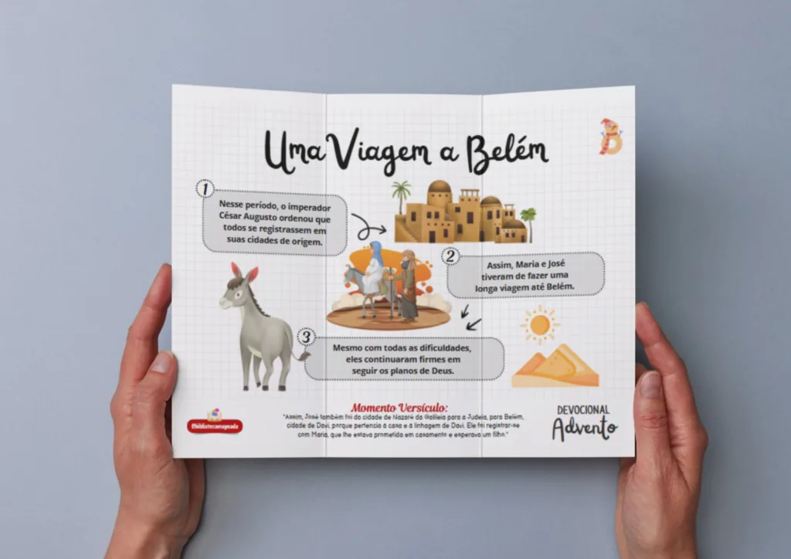
Aprender • conversar • guardar no coraçãoHistórias ilustradasFácil para a criança entender
Acesso vitalícioUse no celular ou imprima
Liberação imediataReceba tudo no seu e-mail
O Devocional entrega o caminho pronto para transformar o momento em família em uma experiência gostosa — sem aulas longas e sem linguagem difícil.
Crie um momento que seu filho vai esperar e lembrar com carinho.
Histórias visuais e linguagem simples, pensadas para os pequenos.
Uma atividade significativa para desacelerar e conversar em família.
Abra no dispositivo ou imprima e comece sem precisar preparar a aula.
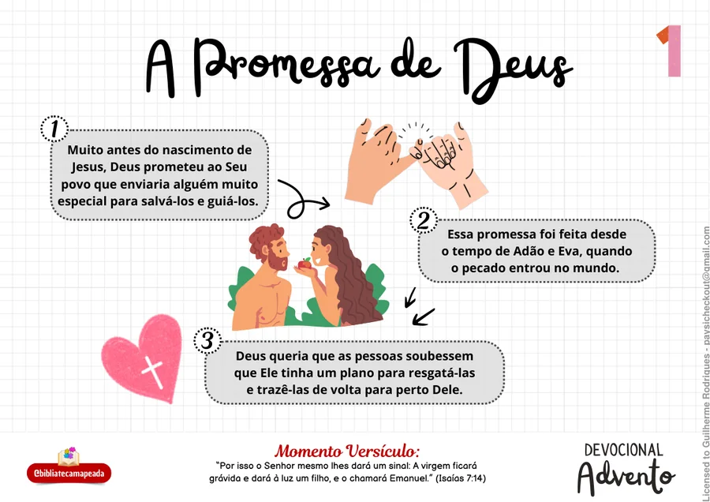
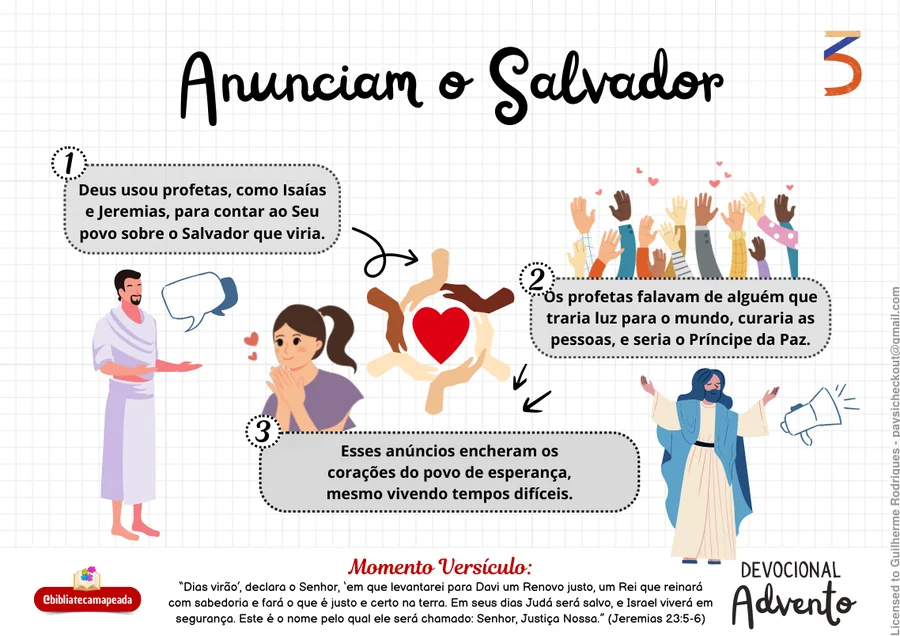
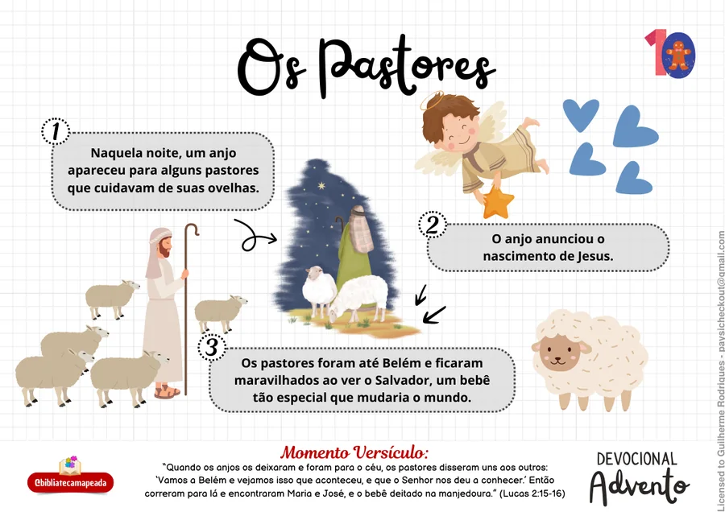
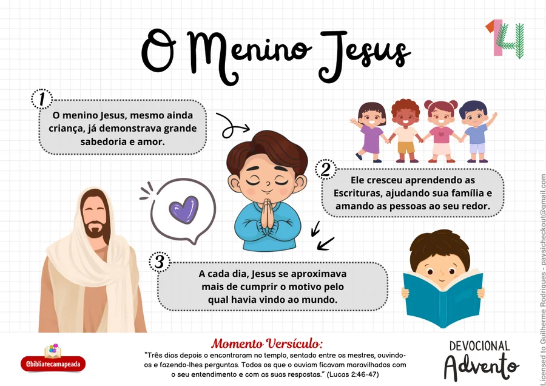
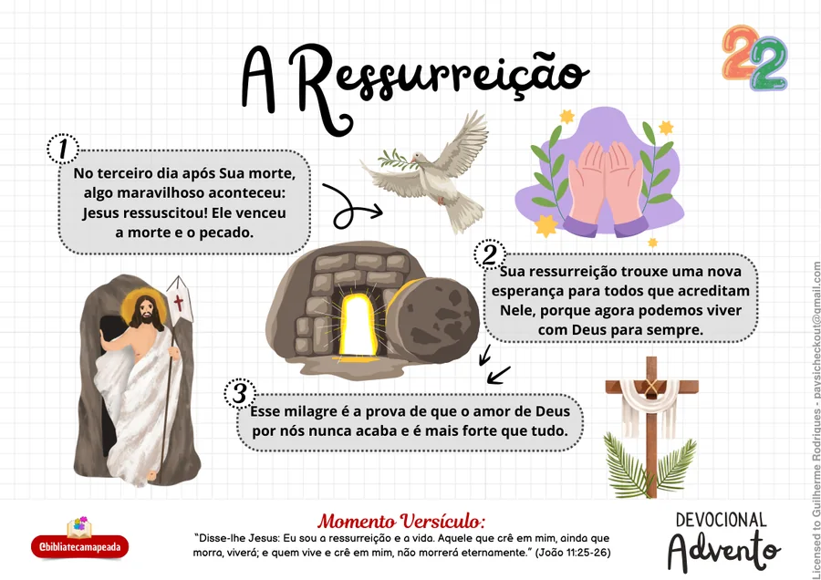
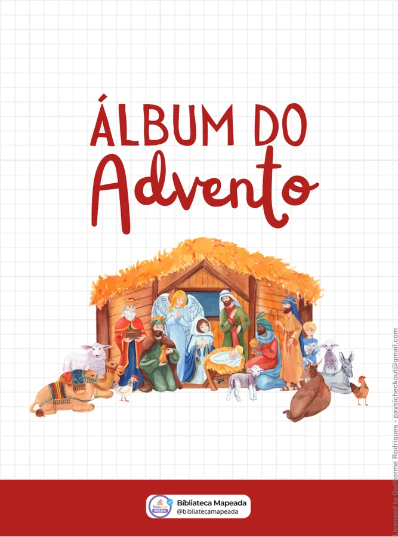
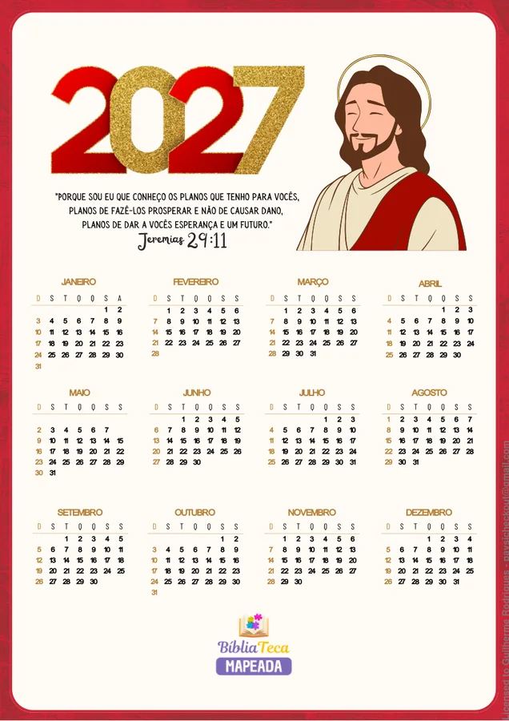
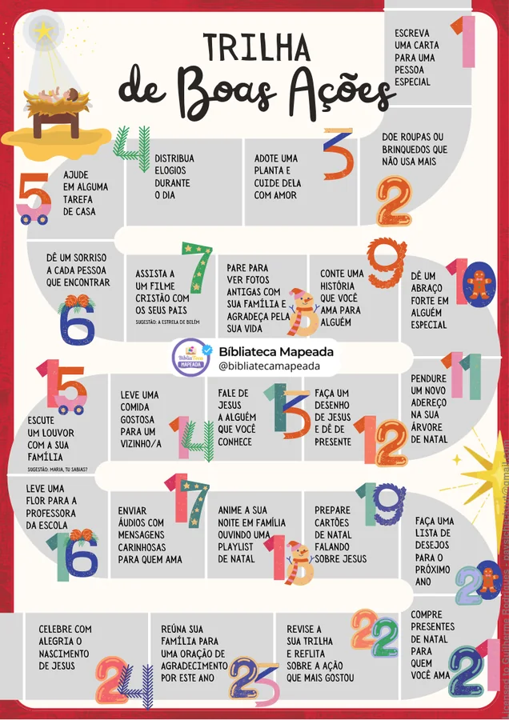
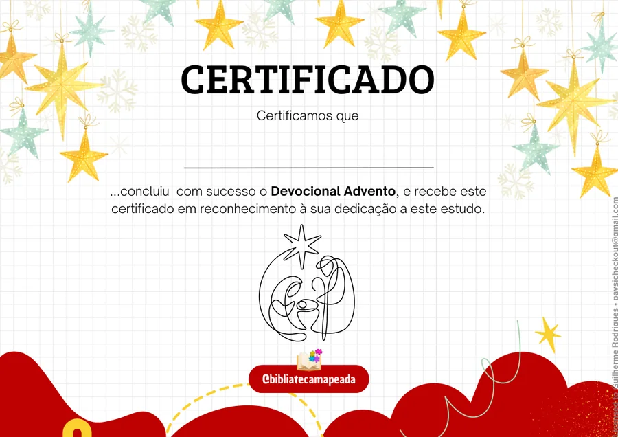
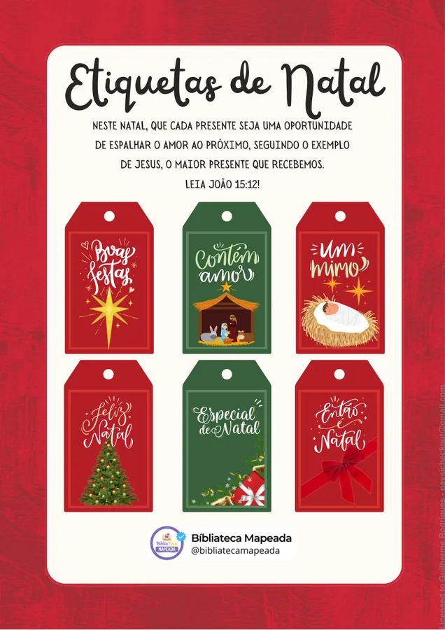
As ilustrações dão contexto, a linguagem aproxima e cada página abre espaço para perguntas, descobertas e conversas que fortalecem a fé.
Do cumprimento das promessas ao nascimento de Cristo, cada página ajuda a criança a entender a história e guardar o aprendizado no coração.
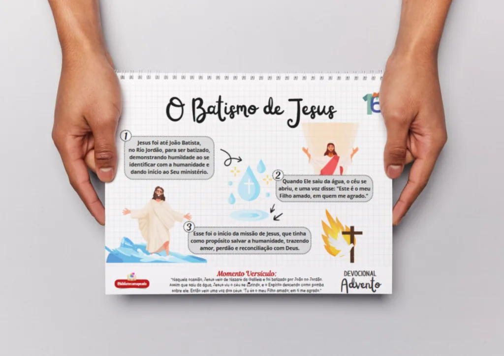
Mensagens reais de famílias que tornaram a Palavra mais próxima dos pequenos.
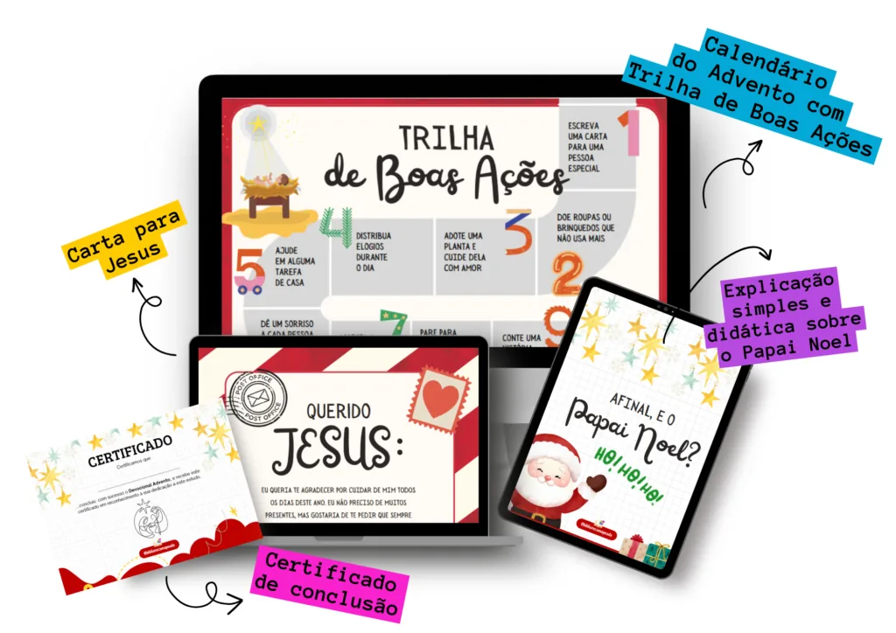
🔒 Ambiente de pagamento seguro
Você tem 7 dias para conhecer o material. Se não ficar totalmente satisfeito nesse período, pode solicitar o reembolso de 100% do investimento.
Ainda ficou com alguma dúvida? Escreva para bibliatecamapeada@gmail.com.
O acesso será enviado para o e-mail usado na compra logo após a confirmação do pagamento.
Sim. Você pode utilizar o conteúdo nos seus dispositivos ou imprimir os arquivos para uso pessoal.
O acesso é vitalício: depois da compra, o material continua disponível para você.
O conteúdo foi pensado para todas as idades e pode ser acompanhado por um adulto de acordo com a fase da criança.
Você tem 7 dias após a compra para conhecer o material e, se necessário, solicitar o reembolso.
Viva momentos de fé, afeto e aprendizado que ficarão guardados na memória da sua família.
Ver a oferta completa